Vinyl Cutting
I wanted to create a sticker for Jorge that he would enjoy. Jose told us that he enjoyed the Florida Gators. Taking that into consideration, I uploaded a picture of the Floridas logo into Afinity Designer 2.
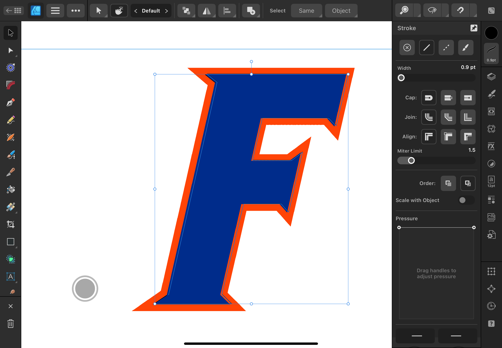I then traced the logo and seperated it from the pictrue.
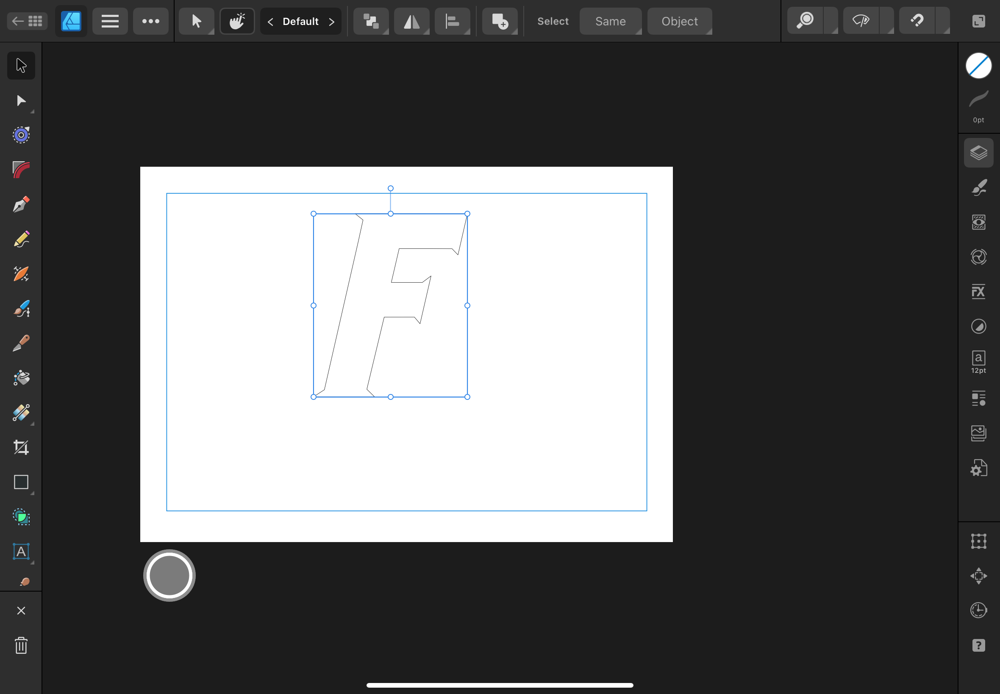After I filled in the traced letter with the color blue.
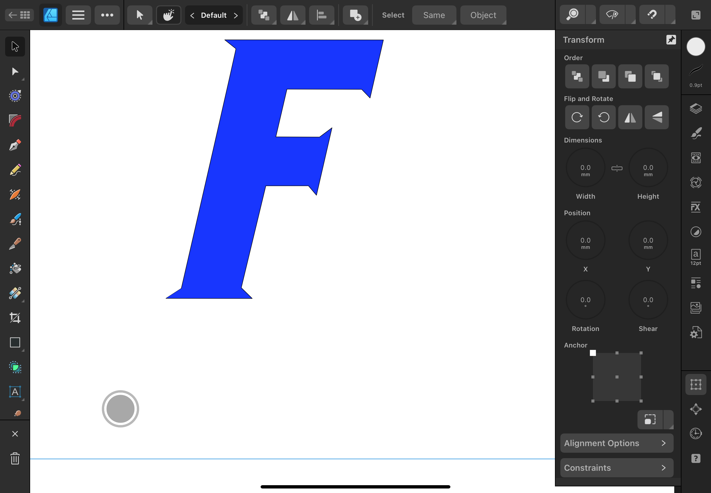I copied the F and enlarged it, as well as changing the color to orange.
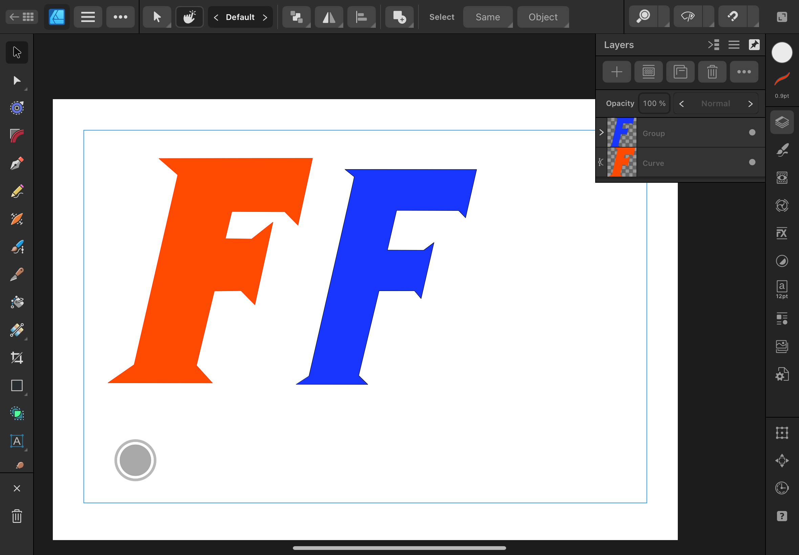I then placed one on top of the oter to make sure that they were accuratly spaced.
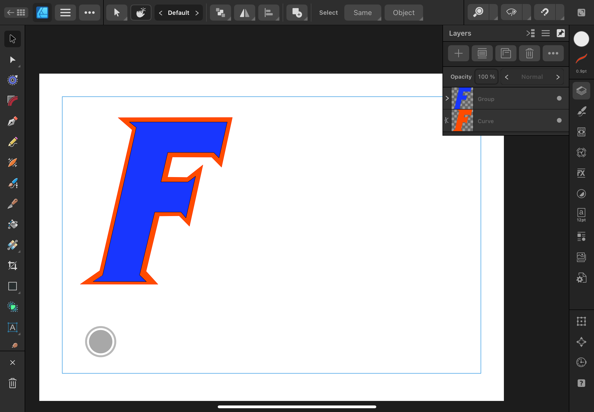I then printed them out and placed the F on top of each other.
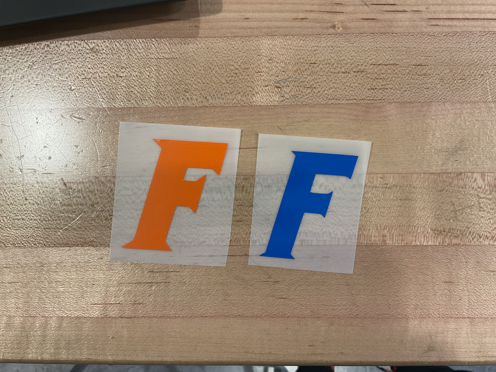Laser Cutting
Jose told us that Jorge really enjoys playing with toy keys, so I decided to laser cut him toy keys. I started by making a basic outline of the top part of the key in Fusion 360.
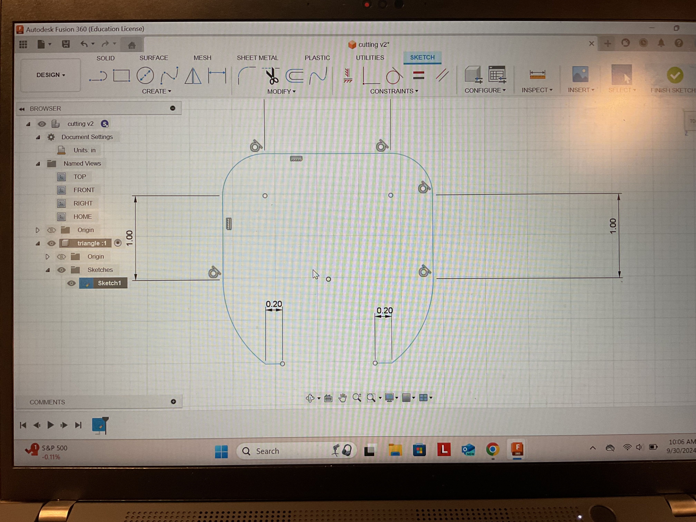After I traced out the part where the ring would go through.
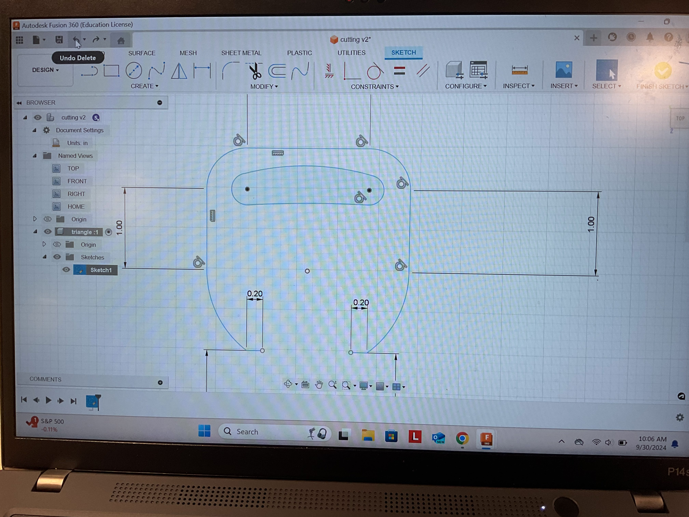I then finished the entire key and made it an accurate length.
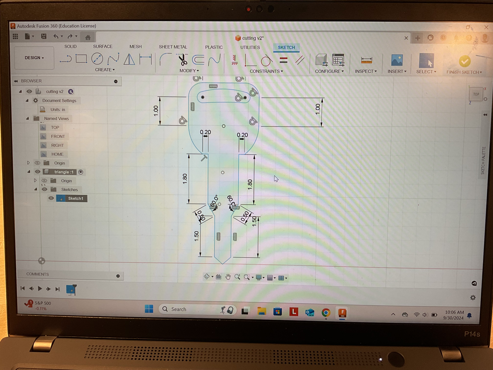Next, I created the ring for the key to fit through and made it smaller than the length of the hole on the key.

I then copied the previous key.
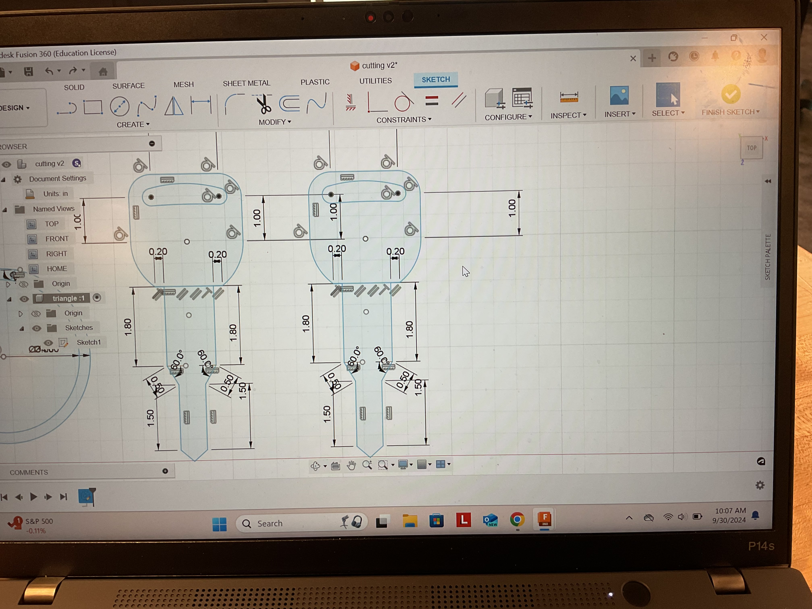I made some minor changes to the new key. First I changed the width of the top part of the key. Then I changed the lenght and width of the bottom part of the key.
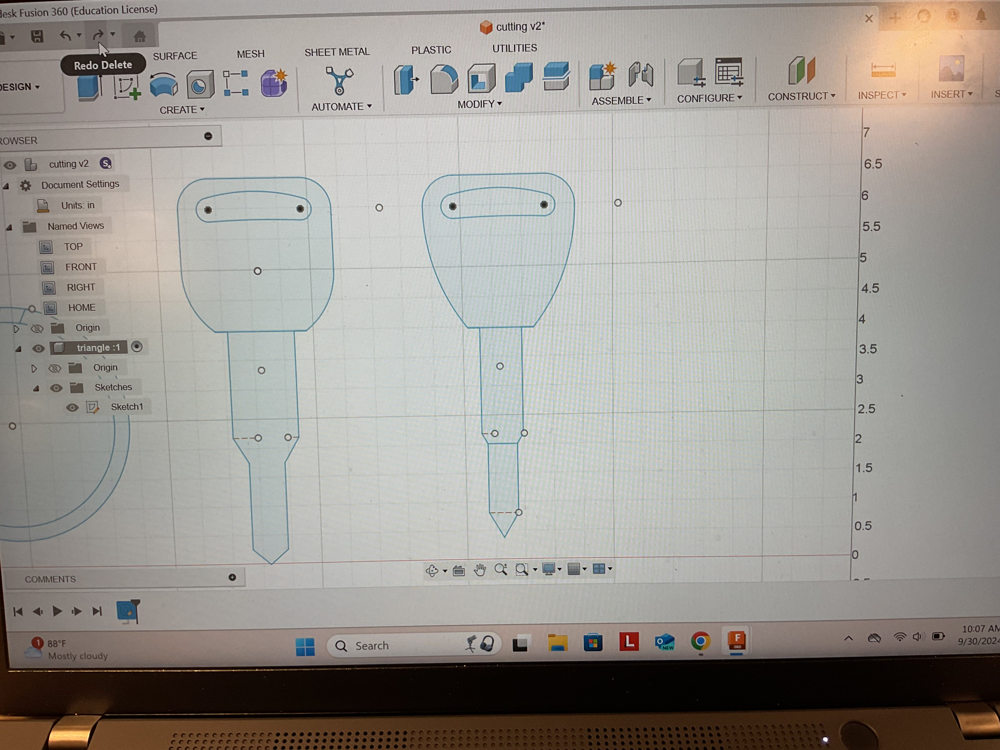IFinally finished with the desing, I exported it onto Infinity Designer 2.
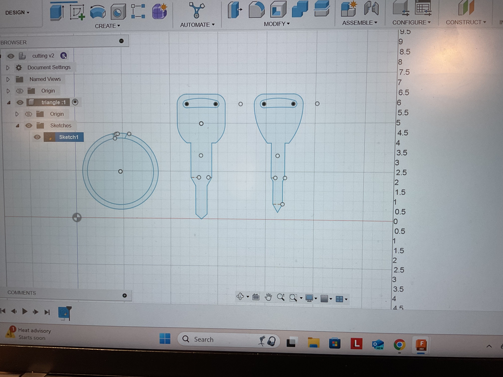On Affinity Designer 2 I changed the stroke size of the keys as well as exporting it to the laser cuter.
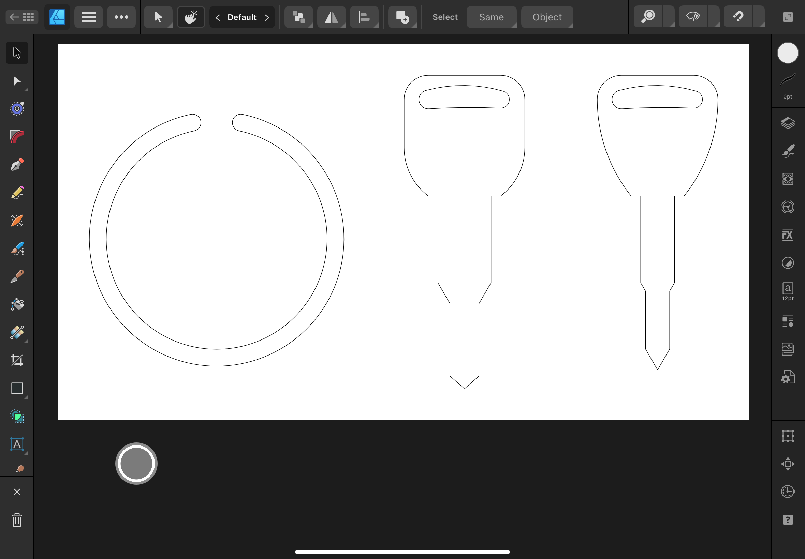Finally, I laser cut the design and everything fit perfectly with each other.